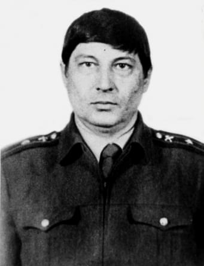
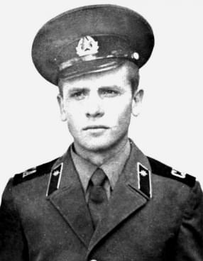

Награды
Сотрудники
Истории героев
Министерство
События
Музеи
Памятники
Мемориальные доски
Награды
Сотрудники
Истории героев
События
Музеи
Памятники
Мемориальные доски
Книга памяти
Главная
/
Сотрудники
Сотрудники
За 30 летнюю историю МЧС России произошло несколько трагических событий, унесших жизни наших коллег.
Награда
Награда 1
Награда 2
Награда 3
Награда 4
Награда 5
Награда 6
Награда 7
Награда 8
Звание или должность
борт оператор
борт радист
водитель 18 пожарной части 2-го разряда УВД Кировской области по охране города Уржума
водитель 3 пожарной части 1-ОГПС УГПС УВД Нижегородской области
водитель 4 пожарной части 16 отряда УГПС ГУВД Свердловской области
водитель автомобиля 133-й пожарной часть 8 отряда федеральной противопожарной службы по Ханты-Мансийскому автономному округу – Югре
водитель автомобиля (пожарного) ПЧ по охране Угловского района
водитель первого класса части технической службы ПАСС МВД Республики Северная Осетия
водитель пожарного автомобиля Среднеканской районной пожарной части управления Государственной противопожарной службы МЧС России по Магаданской области
водитель пожарной части №37 по охране г.Медногорска Государственного учреждения «5 отряд ФПС по Оренбургской области»
водитель ПЧ-1 ГПС МЧС России по Красноярскому краю (ПСЧ-1 1ПСО)
ВПЧ-13 по охране ЭПОХВ
второй пилот
главный специалист отдела экстренного реагирования Государственного учреждения «Центр управления в кризисных ситуациях МЧС России по Чеченской Республике»
дознаватель Холмского отряда пожарной охраны УГПС УВД по Сахалинской области
заместитель начальника 12 ПСЧ 1 отряда ФПС Главного управления по Волгоградской области
заместитель начальника 14 отряда Государственной противопожарной службы МЧС России по Республике Коми
заместитель начальника1 ПВПЧ 5 ООВПО
заместитель начальника 36 ПЧ (роты) 1 бригады ГПС (в/ч 5102) УГПС ГУВД г. Москвы
заместитель начальника 38 ПЧ (роты) УГПС ЮЗАО г. Москвы
заместитель начальника 59 пожарно-спасательной части ФПС 22 ПСО ФПС по г. Москве
заместитель начальника ВПЧ-2 Железнодорожного района УГПС УВД Читинской области
заместитель начальника ОГПС МЧС России г. Бодайбо и Бодайбинского района Главное управлениеМЧС России по Иркутской области
заместитель начальника отдела проведения аварийно-спасательных работ Управления пожарно-спасательных сил ГУ МЧС России по г. Москве
заместитель начальника отряда государственной противопожарной службы № 12 управления государственной противопожарной службы МВД Карелии
заместитель начальника отряда по организации службы пожаротушения – начальник службы пожаротушения ФПС 22 ПСО ФПС по г. Москве
заместитель начальника пожарной части № 9 п охране г. Адыгейска 2 разряда ГУ «ЦУКС МЧС России по Республике Адыгея»
заместитель начальника поисково-спасательной службы, поисково-спасательная служба
заместитель начальника службы пожаротушения и проведения аварийно-спасательных работ – начальник дежурной смены
заместитель начальника СПТ1 ОГПС МЧС России по Ростовской области
заместитель начальника УГПС СВАО г. Москвы
заместитель начальника части пожарной охраны № 14 Вичугского гарнизона ПАСС УВД Ивановской области
заместитель начальника части федеральное государственное казенное учреждение «Специализированная пожарно-спасательная часть федеральной противопожарной службы по Ставропольскому краю»
инженер по техническому обслуживанию авиационной техники 1 категории
инспектор 30 пожарно-спасательного отряда по охране Воротынского района Горьковской области УГПС УВД Нижегородской области
инспектор Государственного пожарного надзора28-ПЧ 4-ОГПС Самарской области МЧС России (г. Тольятти)
инспектор отдела Государственного пожарного надзора Правобережного района МЧС Республики Северная Осетия-Алания
инспектор специализированной части № 11 Управления государственной противопожарной службы УВД Архангельской области
инструктор базы газодымозащитной службы 2 СПЧ УГПС ЦАО УГПС ГУВД г. Москвы
командира отделения, пожарная часть № 56 Главного управления«1 отряд ФПС по Республике Бурятия»
командир воздушного судна – инструктор
командир отделения
командир отделения 110 ПЧ ФГКУ «10 отряд федеральной противопожарной службы по Пермскому краю»
командир отделения 114 пожарной части 7 отряда Государственной противопожарной службы Главного управления МЧС России по Ханты-Мансийскому автономному округу - Югре
командир отделения 11 ПВПЧ 1 ООВПО
командир отделения 133-й пожарной части 8 отряда федеральной противопожарной службы по Ханты- Мансийскому автономному округу-Югре
командир отделения 13 пожарно-спасательной части федерального государственного казенного учреждения «3 отряд федеральной противопожарной службы по Ставропольскому краю»
командир отделения 14 ПЧ 7 ОПО
командир отделения 15 ПЧ ФКУ «ОФПС ГПС по Челябинскойобласти (договорной)»
командир отделения 16 ЧПО 4 ОПО
командир отделения 20-й пожарной части 8-го отряда Государственной противопожарной службы города Пестово Новгородской области
командир отделения 229 пожарная часть Коломенского территориальн6ого управления силами средствами
командир отделения 22 пожарной части федерального казенного учреждения «2 отряд ФПС ГПС Республики Башкортостан (договорной)»
командир отделения 23 ПЧ ФПС 22 отряда ФПС по г. Москве
командир отделения 25 пожарной части 6 отряд ФПС по Тульской области
командир отделения 261 пожарной части 13 отряда УГПС ГУВД Свердловской области
командир отделения 38 пожарной части Ногинского ОГПС Главного управления МЧС России по Московской области
командир отделения 39 ВПЧ 1ОВПО УГПС УВД Пермской области
командир отделения 3 пожарной части
командир отделения 3 самостоятельной военизированной ПЧ УПО УВД Свердлоблисполкома
командир отделения 40-ПЧ 5 ОГПС по охране города Лабинска и Лабинского района ГУ МЧС России по Краснодарскому краю
командир отделения 41 ПЧ (рота) УГПС САО г. Москвы
командир отделения 44 ПСЧ 5 ПСО ГУ МЧС России по Ростовской области
командир отделения 54 пожарно-спасательной части федерального государственного казенного учреждения «15 отряд федеральной противопожарной службы по Республике Татарстан»
командир отделения 5 пожарно-спасательной части федерального государственного казенного учреждения «3 отряд федеральной противопожарной службы по Кировской области»
командир отделения 6 пожарной части Серпуховского ОГПС УГПС ГУВД МО
командир отделения 76 пожарной части 48 отряда УГПС ГУВД Свердловской области
командир отделения 78 пожарной части ФГКУ «37 ОФПС по Московской области»
командир отделения 83 пожарной части 24 отряда Государственной противопожарной службы МЧС России по Республике Башкортостан
командир отделения 85 пожарной части 21 ОГПС УГПС УВД Пермской области
командир отделения 8 пожарной части Рошальского ОГПС УГПС ГУВД МО
командир отделения -водитель 71 самостоятельной военизированной пожарной части управления пожарной охраны Управления внутренних дел Тюменского облисполкома
командир отделения военизированной пожарной части № 6 Управления № 38 СПАСР МВД России
командир отделения ВПЧ-21 отряда ВПО-7 УПО УВД Иркутской области Главное управление МЧС России по Иркутской области
командир отделенияВПЧ-26 ОВПО-7 УПОУВД Самарской области
командир отделения ВПЧ-2 УГПС УВД Читинской области
командир отделения ВПЧ – 5 ПАСС МВД Республика Саха (Якутия)
командир отделения Невельской пожарной части ОГУ «Невельский ПО»
командир отделения отдельного поста 2 пожарной части 6 отряда Государственной противопожарной службы Главного управления МЧС России по Ханты-Мансийскому автономному округу – Югре
командир отделения пожарной части № 1 ОГПС-6 МЧС России Кемеровской области
командир отделения пожарной части №1 ФГКУ 1 «Отряд ФПС по Республике Северная Осетия-Алания»
командир отделения пожарной части №36
командир отделения пожарной части №73 государственного учреждения «11 ОФПС по Челябинской области»
командир отделения пожарно-спасательной части №18 Федеральное казенное государственное учреждение “1 отряд федеральной противопожарной службы по Ярославской области”
командир отделения ПЧ-10 ОГПС МЧС России по Чеченской Республике №3
командир отделения ПЧ-13 УГПС УВД Брянской области
командир отделения ПЧ – 3 5 ОФПС по Республика Саха (Якутия)
командир отделения ПЧ-38 ОГПС-6 УГПС УВД Тульской области
Командир отделения ПЧ-41 по охране Каширского района ГУ «1 отряд ФПС по Воронежской области»
командир отделения ПЧ-52 ОГПС-19 УПО УВД Тульской области
командир отделения ПЧ-66 ГПС МВД Республики Татарстан
командир отделенияПЧ-7
командир отделения ПЧ № 3 по охране Железнодорожного района г. Орла ФГКУ «Отряд противопожарной службы по Орловской области»
командир отделения ФКУ «2 ПЧ ФПС ГПС по Республика Саха (Якутия)
курсант факультета пожарной безопасности Академия ГПС МВД России
мастер – пожарный 16 СЧ по ТКП ФПС 24 отряда ФПС по г. Москве
мастер-пожарный 6-го РСО по ТКП УГПС
мастер-пожарный специализированной части по тушению крупных пожаров ФГКУ «Отряд федеральной противопожарной службы по Республике Дагестан»
мастер-пожарный СПСЧ ФГКУ «Отряд ФПС по Республике Дагенстан»
мастер-пожарный СПСЧ ФГКУ «Отряд ФПС по Республике Дагестан»
начальник 16 пожарной части 1 отряда ГПС УВД Омской области
начальник 30 пожарной части 9 отряда пожарной охраны УГПС ГУВД Свердловской области
начальник 46 пожарно-спасательной части ФПС 23 ПСО ФПС по г. Москве
начальник 61 пожарной части Можайского Отряда Государственной противопожарной службы УГПС ГУВД Московской области
начальника караула ПЧ-2 ОКДП ГПС г.Оренбурга
начальника караула ПЧ-30 3-ОГПС УГПС МЧС России Ямало-Ненецкого автономного округа
начальника караулаПЧ-30 3-ОГПС УГПС МЧС России Ямало-Ненецкого автономного округа
начальникВПЧ-26 ОВПО-7 УПОУВД Самарской области
начальник Главного управления по Приморскому краю
начальник дежурной смены службы пожаротушения и проведения аварийно-спасательных работ ФКУ «ЦУКС ГУ МЧС России по Ленинградской области»
начальник караула 10 пожарной части 6 отряда Государственной противопожарной службы Управления Государственной противопожарной службы Управления внутренних дел Ханты-Мансийского автономного округа
начальник караула 115 пожарной части федеральной противопожарной службы государственного учреждения «4 отряд федеральной противопожарной службы по Тюменской области (договорной)»
начальник караула 11 ПВПЧ 1 ООВПО
начальник караула 11 ПСЧ 2 ПСО ГУ МЧС России по Ростовской области
начальник караула 18 пожарной частиГУ «4ОФПС по Республике Татарстан (договорной)»
начальник караула 31 рота (в/ч 5103) УГПС ГУВД г. Москвы
начальник караула 36 ПЧ (роты) 1 бригады ГПС (в/ч 5102) УГПС ГУВД г. Москвы
начальник караула 37-ПЧ по охране р.п.Дергачи
начальник караула 39 ВПЧ 1 ОВПО УГПС УВД Пермской области
начальник караула 3-й пожарной части по охране Московского района г. Калининграда отряда ГПС МЧС России по Калининградской области
начальник караула 3-й самостоятельной военизированной пожарной части УПО УВД Омской области
начальник караула 47 пожарной части Государственного учреждения «10 отряд ФПС по Оренбургской области»
начальник караула 4-й пожарной части ГУ «ЦУС ФПС Саратовской области
начальник караула 62 пожарной части Орехово-Зуевского отряда Государственной противопожарной службы МЧС России по Московской области
начальник караула 66 ПВПЧ 20 ООВПО
начальник караула 67 пожарной части Солнечногорского ОГПС
начальник караула 70 пожарной части 26 отряда Государственной противопожарной службы МЧС России по Республике Башкортостан
начальник караула 71 ПСЧ 12 ОФПС ГУ МЧС России по Ростовской области
начальник караула 73 ПЧ УГПС СВАО г. Москвы
начальник караула 7 пожарной части Подольского ОГПС Главного управления МЧС России по Московской области
начальник караула 80 ПСЧ ФГКУ «21 отряд ФПС по Пермскому краю»
начальник караула 88 пожарно-спасательной части федерального государственного казенного учреждения «12 отряд ФПС по Республике Башкортостан»
начальник караула 8 пожарной части Управления государственной противопожарной службы УВД Липецкой области по охране Левобережного района города Липецка
начальник караула военизированной пожарная часть №7 по охране Гусиноозерс-кой ГРЭС МВД Республики Бурятия
начальник караула военизированной части № 4 УГПС УВД Читинской области
начальник караула (командир взвода) 12 ПЧ (роты) УГПС ВАО г. Москвы
начальник караула, пожарная часть № 5Центра управления силами федеральной противопожарной службы по Республике Бурятия
начальник караула пожарной части № 5 ОГПС-12 МЧС России по Кемеровской области
начальник караула пожарной части № 6 Управления Государственной противопожарной службы МВД Чувашской Республики
начальник караула пожарной части поселка Харп, Ямало-Ненецкого автономного округа
Начальник караула пожарно-спасательной части № 1 по охране Ленинского района г. Иваново ФПС ГПСФГКУ «1 отряд ФПС по Ивановской области»
начальник караула пожарно-спасательной части №1 ФГКУ «22 отряд ФПС по Кемеровской области»
начальник караула ППЧ-75 ОВПО-4 УПО УВД Тульской области
начальник караула ПСЧ-56 ФГКУ «17 отряд ФПС по Иркутской области Главное управлениеМЧС России по Иркутской области
начальник караула ПЧ-13 УГПС УВД Брянской области
начальник караула ПЧ-15 ОГПС-2 МВД Республики Татарстан
начальник караула ПЧ-27 ОГПС-7 УГПС УВД Тульской области
начальник караула ПЧ-4 50-ОГПС г. Краснодара ГУ МЧС России по Краснодарскому краю
начальник караула ПЧ-4 УГПС УВД Воронежской области
начальник караула самостоятельной военизированной пожарной части № 2 Управления государственной противопожарной службы УВД Архангельской области
начальник караула специальной пожарно-спасательной части № 3
начальник караула Среднеканской районной пожарной части управления Государственной противопожарной службы МЧС России по Магаданской области
начальник отдела связи ГУ МЧС России по Республике Ингушетия
начальник поисково- спасательного отряда г. Тетюши
начальник поисково-спасательного подразделения (высокогорное) Ставропольского поисково-спасательного отряда МЧС России (филиал федерального государственного казенного учреждения «Северо-Кавказский региональный поисково-спасательный отряд МЧС России»)
начальник поисково-спасательного подразделения, поисково-спасательная служба
начальник ПЧ по охране Угловского района
начальник службы пожаротушения ФПС ЦУКС МЧС России по г. Москве
оператор-инструктор бортовой
офицер – водолазный специалист отдела (аварийно-спасательных водолазных работ) управления (первоочередных аварийно-спасательных работ в зонах ЧС)
первый заместитель начальника ГУ МЧС России по Иркутской области Главное управлениеМЧС России по Иркутской области
пожарный 112 пожарной части 11 отряда управления государственной противопожарной службы МВД Республики Коми
пожарный 113 ПЧ Управления по ЦАО ГУ МЧС России по г. Москве
пожарный 115 ПЧ 4 ОГПС УГПС МЧС России Пермской области
пожарный 11 ПВПЧ 1 ООВПО
пожарный 12 пожарной части 1 отряда Государственной противопожарной службы МВД Республики Башкортостан
пожарный 12 пожарной части 1 отряда пожарной охраны ПАСС УВД Кировской области по охране г. Кирово-Чепецка
пожарный 133-й пожарной часть 8 отряда федеральной противопожарной службы по Ханты-Мансийскому автономному округу – Югре
пожарный 13 ПЧ 40 ОФПСГУ МЧС России по Ростовской области
пожарный 15-военизированной пожарной части 1-отряда военизированной пожарной охраны управления пожарной охраны МВД Коми АССР
пожарный 1 класса отдельного поста пожарно-спасательной части № 8 ФГКУ «1 отряд ФПС по Кемеровской области»
пожарный 1 пожарно-спасательной части федерального государственного казённого учреждения «2 отряд федеральной противопожарной службы по Приморскому краю»
пожарный 22-ПЧ 10-ОПО УГПС УВД Нижегородской области
пожарный 28 СВПЧ УПО Мособлисполкома
пожарный 2-пожарной части 1-отряда управления государственной противопожарной службы МВД Республики Коми
пожарный 34 ПЧ1 ОГПС
пожарный 35 СВПЧ
пожарный 39 ВПЧ 1 ОВПО УГПС УВД Пермской области
пожарный 39 ВПЧ 1 ОВПО УГПС УВД Пермской области
пожарный 3 пожарной части государственного учреждения «3 отряд федеральной противопожарной службы по Кировской области»
пожарный 41 ПСЧ 29 ПСО ФПС по г. Москве
пожарный 45-ПЧ 11-ОГПС УГПС по Нижегородской области
пожарный 47 пожарно-спасательной части ФПС 21 ПСО ФПС по г. Москве
пожарный 4 отдельного поста 6 пожарной части ГПС МЧС России (по охране пос. Лесной Кировской области)
пожарный 4 пожарной части по охране Кировского АО г. Омска 7 ОГПС МЧС России Омской области
пожарный 4 ПЧ 1 отряда ФПС МЧС России по Волгоградской области
пожарный 5 пожарно-спасательной части города Свободного ГУ МЧС России по Амурской области
пожарный 5 пожарно-спасательной части федерального государственного казенного учреждения «3 отряд федеральной противопожарной службы по Кировской области»
пожарный 5 ПЧ 40 ОФПСГУ МЧС России по Ростовской области
пожарный 61 пожарной части р.п. Вохтога, Грязовецкого района
пожарный 65 пожарной части Клинского ОГПС Главного управления МЧС России по Московской области
пожарный 70 СВПЧ УГПС УВД Ямало-Ненецкого автономного округа
пожарный 74 пожарной части 7 отряда Государственной противопожарной службы МЧС России по Республике Коми
пожарный 79 ПЧ 9 ОГПС УГПС УВД Ямало-Ненецкого автономного округа
пожарный 7 ПВПЧ 22 ООВПО (14 ОПО)
пожарный 7 пожарной части УГПС ГУВД Свердловской области
пожарный 7 пожарной части Управления государственной противопожарной службы УВД Липецкой области
пожарный 7- ППЧ Городецкого отряда профессиональной пожарной охраны УПО УВД Горьковского облисполкома
пожарный 88 пожарно-спасательной части федерального государственного казенного учреждения «12 отряд ФПС по Республике Башкортостан»
пожарный 89-ПЧ 11 ОГПС Самарской области МЧС России (г. Чапаевск)
пожарный 8 пожарной части 22 отряда Государственной противопожарной службы Республики Башкортостан МЧС России
пожарный 90 пожарной части федерального государственного казенного учреждения «14 отряд ФПС по Республике Башкортостан»
пожарный 91 ПЧ 9 ОГПС УВД Ямало-Ненецкого автономного округа
пожарный 9 ПЧ 8 ОПО
пожарный военизированной пожарной части № 2 УГПС УВД Читинской области
пожарный ВПЧ-31 ОВПО-4 УПО УВД Иркутской области Главное управление МЧС России по Иркутской области
пожарный ВПЧ № 1
пожарный второго класса пожарно-спасательной части № 28 федерального государственного казённого учреждения «2 отряд федеральной противопожарной службы по Тамбовской области»
пожарный ОППЧ-18 УГО и ЧС АМО ГУ МЧС России по Иркутской области Главное управлениеМЧС России по Иркутской области
пожарный ОП ПЧ №1 г. Барнаула
пожарный отдельного поста 22 пожарно-спасательной части 5 ПСО ФПС по Республике Крым
пожарный отдельного поста пожарной части №30 Государственного учреждения «Управление противопожарной службы Республики Мордовия»
пожарный пожарной части №17
пожарный пожарной части № 19 отряда пожарной охраны №1 управления Государственной противопожарной службы МЧС России Ярославской области, сержант внутренней службы
пожарный пожарной части № 1 ОГПС-13 УГПС УВД Кемеровской области
пожарный пожарной части №22 Государственной противопожарной службы МВД по Республике Мордовия по охране Старо-Шайговского района
пожарный пожарной части № 49 отряда государственной противопожарной службы № 15 управления государственной противопожарной службы МВД Карелия
пожарный пожарной части № 4 ОГПС-2 УГПС ГУВД Кемеровской области
пожарный пожарной части № 4 Отряда государственной противопожарной службы № 22 Главного управления по делам ГО и ЧС Архангельской области
пожарный пожарной части № 5ГУ «3 отряд ФПС по Кемеровской области»
пожарный пожарной части №5 управления противопожарной службы по г. Димитровграду УПС службы по обеспечению ГО ЧС и ПБ Ульяновской области
пожарный пожарной части № 6 отряда пожарной охраны № 2 управления государственной противопожарной службы МВД Карелия
пожарный пожарной части №8 отряда пожарной охраны №1 управления Государственной противопожарной службы управления внутренних дел Ярославской области
пожарный пожарной части с. Подгорное Чаинского района
пожарный пожарно-спасательной части №1 ФГКУ «22 отряд ФПС по Кемеровской области»
пожарный ПСЧ-15 ФГКУ «5 отряд ФПС по Иркутской области» Главное управлениеМЧС России по Иркутской области
пожарный ПСЧ-1 ФГКУ «13 ОФПС по Тверской области»
пожарный ПЧ-107 3-ОГПС УГПС МЧС России Ямало-Ненецкого автономного округа
пожарный ПЧ-1 УПО УВД Тульской области
пожарный ПЧ-20 ОПО-2 ГПС МВД Республики Татарстан
пожарныйПЧ-27 ОФПС-10(ПСЧ-27 10ПСО)
пожарныйПЧ-39 ОГПС-8
пожарный ПЧ-6 ФПС по охране 203 мкр. г.Якутск ФГКУ 5 ОФПС по Республике Саха (Якутия)
пожарный ПЧ-78 ОГПС-17 УГПС УВД Тульской области
пожарный ПЧ-9 ГУ «6 отряд ФПС по Новосибирской области»
пожарный ПЧ №1 УВД Курской области
пожарный ПЧ №51 ОПО-3 Жуковского района Калужской области
пожарный СВПЧ-8 ОВПО-1
помощник начальника дежурной смены службы пожаротушения при УГПС УВД ЯНАО
помощник начальника караула 12 пожарной части ГУ «20 ОФПС по Московской области»
помощник начальника караула 26-ПЧ 3-ОГПС УГПС ГУВД Нижегородской области
помощник начальника караула 29 ПЧ УГОЧС СЗАО г. Москвы
помощник начальника караула 2 пожарной части федеральной противопожарной службы федерального государственного казенного учреждения «1 отряд ФПС по Мурманской области»
помощник начальника караула 30 пожарной части 9 отряда пожарной охраны УГПС ГУВД Свердловской области
помощник начальника караула 40 ПЧ 2 ОПО
помощник начальника караула 40 ПЧ 2 ОФПС
помощник начальника караула 4 пожарной части 22 отряда Государственной противопожарной службы МВД Республики Башкортостан
помощник начальника караула 51 ПЧ 37 ОПО УГПС ГУВД
помощник начальника караула 67-ПЧ 12-ОГПС ГУ МЧС России по Нижегородской области
помощник начальника караула 6 пожарной части ФПС по охране Советского АО г. Омска ФГКУ «4 отряд ФПС по Омской области»
помощник начальника караула 8 пожарной части 22 отряда Государственной противопожарной службы Республики Башкортостан МЧС России
помощник начальника караула пожарной части № 2 г. Чита ФГКУ «3 отряд ФПС по Забайкальскому краю»
помощник начальника караула ПСЧ-15 ФГКУ «5 отряд ФПС по Иркутской области» Главное управлениеМЧС России по Иркутской области
помощник начальника караула ПЧ-15 ОГПС-2 УГПС УВД Самарской области
помощник начальника караула ПЧ-1 ОГПС-7 МВД Республики Татарстан
помощник начальника караула ПЧ-3 ФГКУ «1 отряд ФПС по Новосибирской области»
помощник начальника караула ПЧ-66 ГПС МВД Республики Татарстан
помощник начальника оперативного дежурного ОВПО-1
преподаватель-методист специальных дисциплин циклапрактического обучения Самарского учебного центра ФПС
респираторщик
респираторщик 34 ПЧ 1 ОПО
респираторщик 7 ПВПЧ 22 ООВПО (14 ОПО)
респираторщик ПЧ-19 ГПС УВД Красноярского края (ПСЧ-19 1 ПСО)
спасатель международного класса, поисково-спасательная служба
старший бортовой инженер авиационного отряда
старший водитель 12-й пожарной части Центра управлениясилами федеральной противопожарной службы по Самарской области
старший инженер ИГПН 79 ПЧ 9 ОГПС УГПС УВД Ямало-Ненецкого автономного округа
старший инспектор по мобилизационной работе и гражданской обороне Екатеринбургского пожарно-технического училища МВД России
старший инструктор газодымозащитной службы 20 СПЧ (роты) 1 бригады ГПС (в/ч 5102) УГПС ГУВД г. Москвы
старший инструктор газодымозащитной службы 2 СПЧ УГПС ЦАО УГПС ГУВД г. Москвы
старший инструктор газодымозащитной службы и химической защиты 3 специальной части федеральной противопожарной службы по тушению крупных пожаров центра управления силами ФПС по Мурманской области
старший инструктор ГДЗС 36 пожарной части 8 ОФПС
старший инструктор по вождению пожарной машины – водитель
старший инструкторпо вождению пожарной машины - водителя Регионального спасательного отряда по тушению крупных пожаров УГПС УВД Камчатской области
старший инструктор по вождению пожарных машин - водитель Специализированной части № 5 по тушению крупных пожаров г. Белгорода
старший инструктор пожарной машины 8 ПЧ УГПС ЦАО г. Москвы
старший инструктор – пожарный 32 СЧ по ТКП 25 отряда ФПС по г. Москве
старший инструктор-пожарный специализированной части по тушению крупных пожаров ФГКУ «Отряд ФПС по Республике Дагестан»
старший инструктор-пожарный цикла практического обученияСамарского учебногоцентра ФПС
старший инструктор-спасатель специальной пожарно-спасательной части № 5
старший инструктор химической и радиационной разведки государственного учреждения «Специализированная пожарная часть по тушению крупных пожаров ФПС по Тюменской области»
старший мастер ГДЗС 1 ПВПЧ 5 ООВПО
старший пожарный 107 ПЧ ФПС по г. Москве при Главном управлении МЧС России по г. Москве
старший пожарный 11-СВПЧ УПО УВД Горьковского облисполкома
старший пожарный 13 пожарной части 9 отряда пожарной охраны УГПС ГУВД Свердловской области
старший пожарный 18 ПЧ (роты) УГПС ВАО г. Москвы
старший пожарный 23 ПЧ 13 ОПО УГПС
старший пожарный 2 СПЧ УГПС ЦАО МЧС России г. Москвы
старший пожарный 30 пожарной части 9 отряда пожарной охраны УГПС ГУВД Свердловской области
старший пожарный 34 пожарной части по охране ТЭЦ-5 города Омска 6 отряда ГПС МЧС России Омской области
старший пожарный 3 ПСЧ 2 ПСО ГУ МЧС России по Ростовской области
старший пожарный 47 пожарно-спасательной части ФПС 21 ПСО ФПС по г. Москве
старший пожарный 47 ПЧ УГПС ЦАО МЧС России г. Москвы
старший пожарный 53 пожарно-спасательной части Государственного учреждения «Пожарно-спасательный отряд Приморского района Санкт-Петербурга»
старший пожарный 59 пожарно-спасательной части ФПС 22 ПСО ФПС по г. Москве
старший пожарный59 пожарно-спасательной части ФПС 22 ПСО ФПС по г. Москве
старший пожарный 65 пожарной части 5 отряда Государственной противопожарной службы Управления Государственной противопожарной службы Управления внутренних дел Ханты-Мансийского автономного округа
старший пожарный 6 ПСЧ 29 ПСО ФПС ГПС Главного управления МЧС России по Московской области
старший пожарный 76 пожарной части ГУ «25 ОФПС по Московской области»
старший пожарный 76 ПЧ (роты) УГПС ЮВАО г. Москвы
старший пожарный 78 пожарной части ФГКУ «37 ОФПС по Московской области»
старший пожарный 7 ПВПЧ 23 ООВПО (14 ОПО)
старший пожарный 7 пожарной части Подольского ОГПС Главного управления МЧС России по Московской области
старший пожарный 8 пожарной части 1 ОГПС Оренбургской области
старший пожарный 96 пожарной части 10 отряда Государственной противопожарной службы Управления Государственной противопожарной службы Управления внутренних дел Ханты-Мансийского автономного округа
старший пожарный отдельного поста 6 пожарной части Серпуховского ОГПС УГПС ГУВД МО
старший пожарный пожарной части № 10 Государственного учреждения «Центра управления в кризисных ситуациях МЧС России по Республике Дагестан»
старший пожарный пожарной части № 5 ГУ «3 отряд ФПС по Кемеровской области»
старший пожарный пожарной части №5 УПС по г. Димитровграду УПС службы по обеспечению ГО ЧС и ПБ Ульяновской области
старший пожарный пожарно-спасательная часть № 1 по охране Ленинского района г. Иваново ФПС ГПС ФГКУ «1 отряд ФПС по Ивановской области»
старший пожарный ПЧ-12 Благовещенского отряда ГПС ГУ МЧС России по Амурской области
старший пожарный ПЧ-7
старший помощник начальника дежурной смены ЦУС
старший помощник руководителя пожаротушения дежурной службы пожаротушения ПАСС МВД Республики Северная Осетия
старший распираторщик (химик – дозиметрист) специализированной части военизировано пожарной охраны - 2
старший респираторщик 1 ПЧ 5 ОПО УГПС
старший респираторщик 5 пожарной части 10 ОГПС
тракторист – бульдозерист 171 отдельного механизированного Краснознаменного полка имени Ленсовета
штурман воздушного судна
Подразделение или часть
Подразделение или часть 1
Подразделение или часть 2
Подразделение или часть 3
Подразделение или часть 4
Подразделение или часть 5
Подразделение или часть 6
Подразделение или часть 7
Подразделение или часть 8
Сведения о событии
Сведения о событии 1
Сведения о событии 2
Сведения о событии 3
Сведения о событии 4
Сведения о событии 5
Сведения о событии 6
Сведения о событии 7
Сведения о событии 8
Регион события
Регион события 1
Регион события 2
Регион события 3
Регион события 4
Регион события 5
Регион события 6
Регион события 7
Регион события 8
Скрыть фильтр
Сбросить
Искать
Расширенный фильтр
Результат поиска: 331 сотрудник

8 мая 1961 – 8 января 1982
Бутаков Александр Константинович
Начальник инспекции госпожнадзор

8 мая 1961 – 8 января 1982
Тарасов Вячеслав Александрович
Пожарный
8 мая 1961 – 8 января 1982
Бутаков Александр Константинович
Начальник инспекции госпожнадзор
8 мая 1961 – 8 января 1982
Тарасов Вячеслав Александрович
Пожарный
8 мая 1961 – 8 января 1982
Бутаков Александр Константинович
Начальник инспекции госпожнадзор
8 мая 1961 – 8 января 1982
Тарасов Вячеслав Александрович
Пожарный
8 мая 1961 – 8 января 1982
Бутаков Александр Константинович
Начальник инспекции госпожнадзор
8 мая 1961 – 8 января 1982
Тарасов Вячеслав Александрович
Пожарный
8 мая 1961 – 8 января 1982
Бутаков Александр Константинович
Начальник инспекции госпожнадзор
8 мая 1961 – 8 января 1982
Тарасов Вячеслав Александрович
Пожарный
8 мая 1961 – 8 января 1982
Бутаков Александр Константинович
Начальник инспекции госпожнадзор
8 мая 1961 – 8 января 1982
Тарасов Вячеслав Александрович
Пожарный
8 мая 1961 – 8 января 1982
Бутаков Александр Константинович
Начальник инспекции госпожнадзор
8 мая 1961 – 8 января 1982
Тарасов Вячеслав Александрович
Пожарный
8 мая 1961 – 8 января 1982
Бутаков Александр Константинович
Начальник инспекции госпожнадзор
Показать еще
1
2
3
4
...
67
Показывать по:
15
15
30
60
120
Добавить героя
Информация о герое:
Информация о представителе:
Отправить
Обратная связь
Тип обращения:
Вопрос
Сообщение о проблеме
Предложение
Отправить
Спасибо за Ваше обращение!
Мы проверим информацию и свяжемся с Вами.